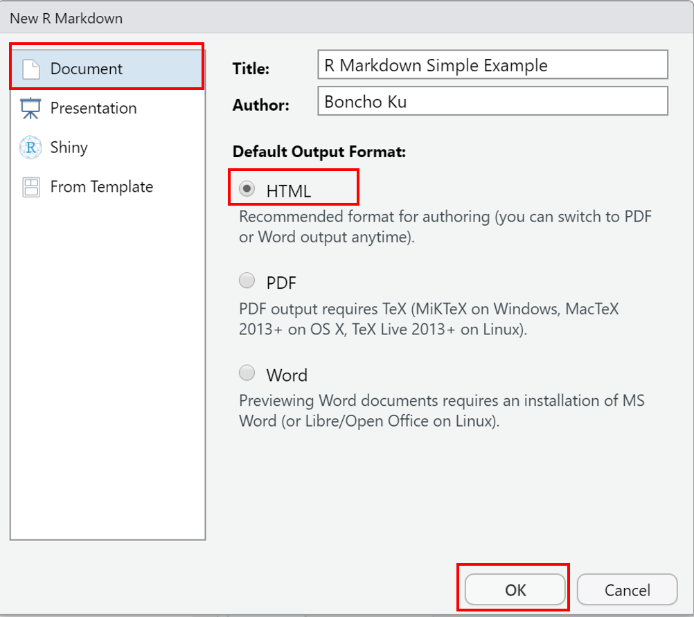
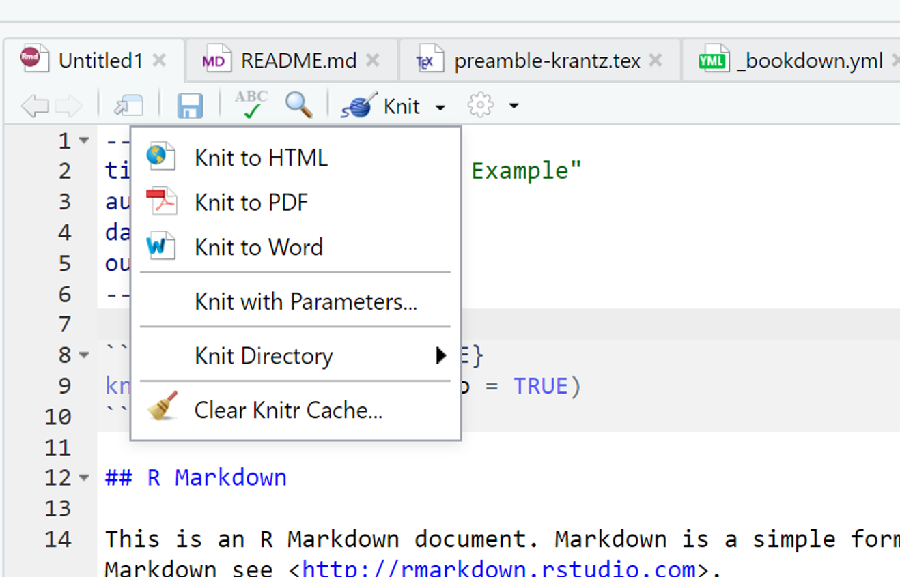
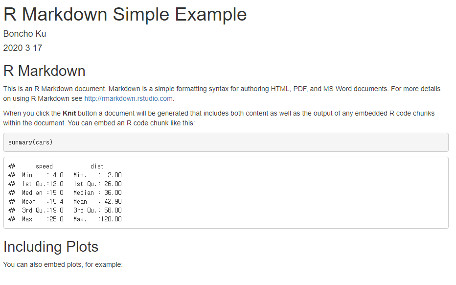

1.7 R Markdown (맛보기)
R 기초 문법 절과 마찬가지로 R Markdown을 이용해 최소한의 문서(
html 문서)를 작성하고 생성하는 방법에 대해 기술함.
R Markdown에 대한 보다 상세한 내용은 9주차에 다룰 예정임.
- R Markdown은 R 코드와 분석 결과(표, 그림 등)을 포함한 문서 또는 컨텐츠를 제작하는 도구로 일반적으로 아래 열거한 형태로 활용함
- 문서 또는 논문(
pdf,html,docx) - 프리젠테이션(
pdf,html,pptx) - 웹 또는 블로그
- 문서 또는 논문(
- 재현가능(reproducible)한 분석 및 연구5 가능
- 신뢰성 있는 문서 작성
Copy & paste를 하지 않고 효율적 작업 가능
- R Markdown 문서를 통해 최종 결과물(
pdf,html,docx)이 도출되는 process- 현재 공식적인 프로세스는
knitr+rmarkdown+pandoc+RStudio+github
- 현재 공식적인 프로세스는

Figure 1.9: R Markdown의 최종 결과물 산출과정(http://applied-r.com/project-reporting-template/)
R Markdown 문서 시작하기
- R Markdown 문서 생성:
[File] -> [New File] -> [R Markdown..]을 선택
RStudio를 처음 설치하고 위와 같이 진행할 경우 아래와 같은 패키지 설치 여부를 묻는 팝업 창이 나타남. 패키지 설치 여부에
[Yes]를 클릭하면 R Markdown 문서 생성을 위해 필요한 패키지들이 자동으로 설치
- 설치 완료 후 R Markdown으로 생성할 최종 문서 유형 선택 질의 창이 나타남. 아래 창에서 제목(Title)과 저자(Author) 이름 입력 후
[OK]버튼 클릭(Document,html문서 선택)

- 아래 그림과 같이 새로운 문서 창이 생성되고
test.Rmd파일로 저장6

- 문서 상단에
Knit아이콘을 클릭 후Knit to HTML클릭 또는 문서 아무 곳에 커서를 위치하고 단축키[Ctrl] + [Shift] + [K]입력

knitr+R Markdown+pandoc\(\rightarrow\)html파일 생성 결과

Figure 1.10: test.html 문서 화면(저장 폴더 내 test.html을 크롬 브라우저로 실행)
1.7.0.1 R Markdown 문서 구성
R Markdown 문서는 아래 그림과 같이 YAML, Markdown 텍스트, Code Chunk 세 부분으로 구성됨.
1. YAML (YAML Ain’t Markup Language)
- R Markdown 문서의 metadata로 문서의 맨 처음에 항상 포함되어야 함.
- R Markdown 문서의 최종 출력 형태, 제목, 저자, 날짜 등의 정보 등을 포함
- YAML 언어에 대한 사용 예시는 Xie (2016) 의 Appendix B.2 참고
- 최소 형태의 YAML 예시
---
title: "Hello R Markdown"
author: "Zorba"
date: "2020-03-17"
output: html_document
---2. Markdown 텍스트
- Markdown의 자세한 문법은 2학기 통계패키지활용에서 다룰 예정임
- R Markdown 레퍼런스 가이드 참조
- 그림 삽입:

그립 삽입 구문
 3. Code Chunk
- 실제 R code가 실행되는 부분임
- Code chunk 실행 시 다양한 옵션들이 있으나 이 부분 역시 15주 차 강의에서 간략히 다룰 예정임
- Code chunk는
```{r}로 시작되며r은 code 언어 이름을 나타냄. - Code chunk는
```로 종료 - R Markdown 문서 작성 시 단축키
[Ctrl] + [Alt] + [I]를 입력하면 Chunk 입력창이 자동 생성됨 - Chunk option에 대한 상세 내용은 https://yihui.org/knitr/options/ 또는 R Markdown 레퍼런스 가이드 참조
Code chunk 예시
Xie의 R Markdown: The Definitive Guide에서 발췌
```{r}
fit = lm(dist ~ speed, data = cars)
b = coef(fit)
plot(cars)
abline(fit)
```fit = lm(dist ~ speed, data = cars)
b = coef(fit)
plot(cars)
abline(fit)- Code chunk에서 외부 그림 파일 불러오기(Xie, Allaire, and Grolemund (2018) 에서 예시 발췌)
knitr::include_graphics(rep('figures/knit-logo.png', 3))


Homework 1: R Markdown 문서에 아래 내용을 포함한 문서를 html 파일 형식으로 출력 후 제출
- 간략한 자기소개 및 “통계 프로그래밍 언어” 수업에 대한 본인만의 목표 기술
- 본인이 setting 한 RStudio 구성 캡쳐 화면을 그림 파일로 저장하고 R Markdown 문서에 삽입(화면 캡쳐 시 생성 프로젝트 내 폴더 내용 반드시 포함)
- 현재 R 작업폴더(처음 R 시작 시 디폴트로 설정된 폴더) 및 작업폴더 내에 있는 파일명 출력
- 현재 R 작업폴더에서 차상위 폴더의 파일명 출력
- 패키지
ggplot2패키지 설치 후cars데이터셋의 2차원 산점도(hint:help(geom_point)또는 googling 활용)를 문서에 포함
References
Xie, Yihui. 2016. Bookdown: Authoring Books and Technical Documents with R Markdown. Boca Raton, Florida: Chapman; Hall/CRC. https://github.com/rstudio/bookdown.
Xie, Yihui, J. J. Allaire, and Garrett Grolemund. 2018. R Markdown: The Definitive Guide. Boca Raton, Florida: Chapman; Hall/CRC. https://bookdown.org/yihui/rmarkdown.
과학적 연구의 결과물을 오픈소스로 내놓고 누구라도 검증 가능↩︎
RStudio 프로젝트에서 생성한 폴더 내에 파일 저장↩︎